Core
422Hz
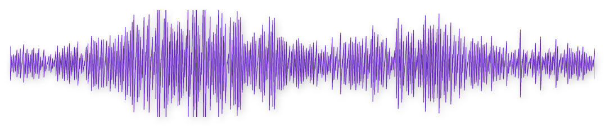
The signal for who you are and what is yours to do.
Root Band · 250–425 Hz
Michael Lovitch · March 12, 1984
Four frequencies, calculated from the exact minute and place you were born. Yours for life.
Personalized music in the Zodiac.fm app. For iPhone and Android.
422Hz

The signal for who you are and what is yours to do.
Root Band · 250–425 Hz
432Hz

The signal for who to let close and how to connect.
Solar Plexus Band · 425–600 Hz
579Hz
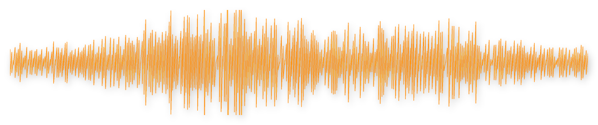
The signal for what feeds you and what drains you.
Solar Plexus Band · 425–600 Hz
611Hz

The signal for when to move and which opportunities are yours.
Throat Band · 600–775 Hz
You can put anything on a vision board. The more personal question is who’s doing the wanting.
Zodiac amplifies the frequencies that have been yours since birth. Bring that authentic vibration into your visualization, meditation and journaling, so what you’re calling in starts with the real you.
Then take that alignment into how you live.
“I prayed for a sign and asked for 10 paid members Then I started listening to Zodiac… Within 45 days, we had almost 40 paid members. It felt like the floodgates of abundance, prosperity, and purpose opened.”
“The static is gone. I finally feel like myself.”
“I am seeing a huge difference in how much more loving I am. I’m more affectionate, more grounded.”
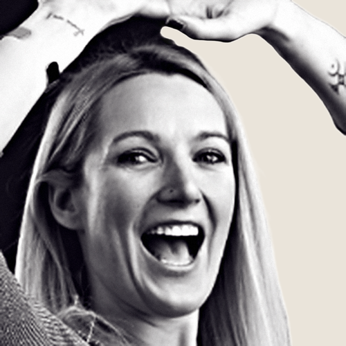
“Zodiac FM blew my mind! This is the cutting-edge tool I didn't know I needed... now I can't get enough! When I play one, I feel an immediate energy shift.”
A 52-week study of our own members: 300 people started, 278 completed. The numbers below are from members who used it as designed: at least nine minutes a day on average, across all four frequencies.
What came online for them
“As designed” means at least nine minutes a day on average, with all four frequencies in balance. We report it exactly that way.
“This music tickled my soul and reminded me that there’s such a connection between vibration, the stars, and the sounds that are coordinated by higher intelligence.”
“Zodiac core frequencies translate this unique imprint into sound, bypassing the mind and speaking directly to the body.”
“Employing vibration and frequency for our well-being is the future. And Zodiac.fm is way ahead of the curve.”
“Zodiac.fm works at the frequency level underneath the pattern. Instead of just studying your blueprint, you begin resonating with it.”
“I am so impressed with how I immediately noticed a difference down to the cellular level with Zodiac.fm. As the Founder of a certifying organization, I am very careful about what I endorse.”
Eight compositions in all four of your personal frequencies: 9 hours 54 minutes in total, and growing.
3/5 min
Quiet Success · 3 minKindred Spirits · 5 minElysian Surge · 5 min
9 min
Starseed · 9 minAstrolith · 9 min
25/30 min
Cosmic Drift · 25 minTemple Space · 30 min
60 min
Galactic Deep · 60 min
Courtesy of XXXXX.
Enjoy seven days free.
About 20% off
Both plans include all eight compositions in all four frequencies.
Nothing today. On day 8, $88 is billed yearly. It renews yearly until you cancel. Cancel before day 8 to avoid the membership charge.
Start my seven free daysThis is a one-time offer. You won’t see this discount again.
Or sample my frequencies**Three free songs in each frequency: two five-minute songs and one three-minute song. Thirteen minutes per frequency.
Your frequency numbers correspond to locations going from your belly (root), all the way to the top of your head (your crown).

Who you are and your life’s purpose are most naturally processed through groundedness.
Your read on issues related to your identity will be most accurate when you are still, steady and grounded.
Your most trusted route on your life’s purpose may be trusting your gut, literally.
At 422 Hz, Core is approaching the Solar Plexus Band, so drive and motion may also help clarify your identity signal.
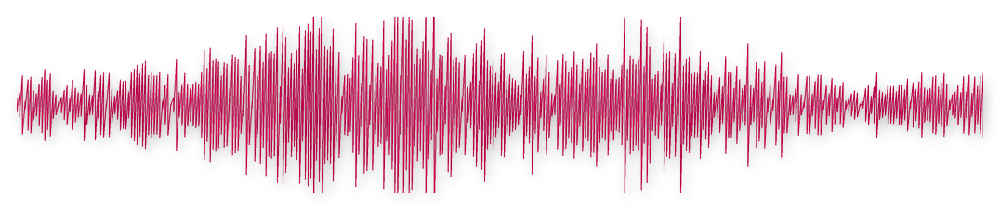
Who to let in, how close to become, and how you connect tend to clarify through drive and motion.
You can trust how to approach the connection most accurately through action and engagement, either with the person directly or by thinking about the relationship while moving.

The thoughts and actions that feed and drain your lifeforce are best identified and clarified when you are moving and taking action.
Your most trusted route towards choosing what truly lights you up is through drive and motion.
This is also how you may identify actions which are slowly draining your energy.
At 579 Hz, your Vitality is also close to the Throat Band, so you may also gain clarity on what feeds and drains you energetically by journaling or talking things out. Using words is important to your process.
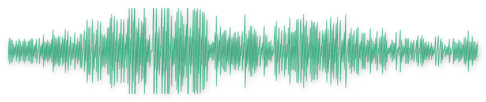
Recognizing opportunities and your timing are naturally identified and clarified when you can talk or write it out.
Articulating verbally or through a journal will lead to a more accurate read on what to do and when.
For manifesting, the natural way is to write it out or talk it through with trusted friends and advisors.
That is how you are built. Whether you live from it is another matter.
Every listen makes your signal a little clearer to the part of you that runs your life without asking.
First the static clears. Then the voice in your head gets kinder. Then you catch yourself mid-reaction, and for once there’s a gap. You get to choose.
The people around you usually notice before you do. Then it shows up where it counts: the decision that comes easier, the room you stop managing, the yes you finally trust.
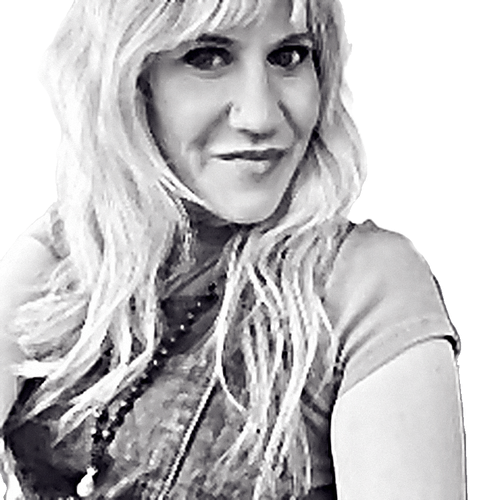
“Friends and family noticed the change in my presence.”
“…it’s the reset that helps me become the version of me I want to bring to the world.”
In their own words.
Confirmation that the person you always suspected was underneath everything actually exists.
“If you’re tired of living out of tune with yourself, this is your invitation home.”
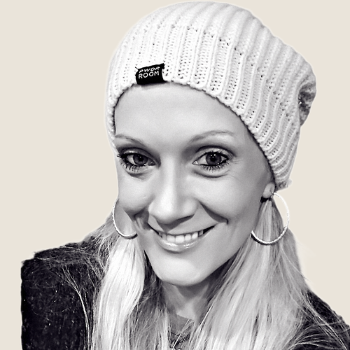
“I feel like ME. I feel like the person I’ve been trying to get back to for so long…”
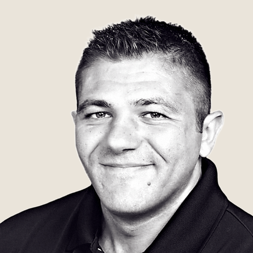
“…I slip into my flow state MUCH easier, with a greater sense of calm and ease.”
“I went from ranting and complaining in my pages to writing in a way that felt hopeful… in only 9 minutes.”
“I have received multiple unexpected new very lucrative opportunities since I began tuning in.”
“I landed two new clients that came literally out of the blue.”
You don’t rearrange your life. The music carries you.
Walk, drive, cook, work, fall asleep to it. Most people listen for hours because the music is good.
Meditation, breathwork, Human Design, Gene Keys, prayer: each one quiets you down to reach the same self. Zodiac amplifies that self. Together, the effect compounds.
It will not tell you who you are.
It turns up what is there. The rest is yours.
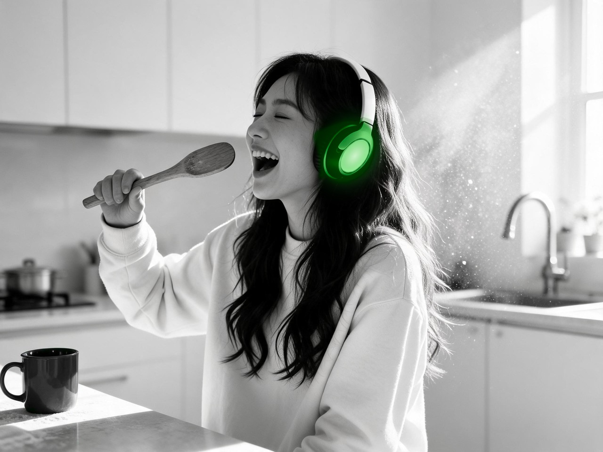
“I started listening every day, sometimes for hours, because quietly everything in my life responded…”
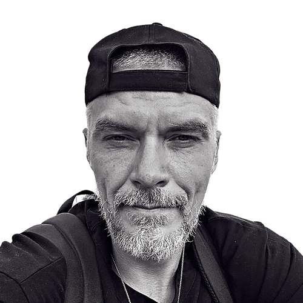
“I’ve explored Kabbalah, Human Design, Gene Keys… the only practice that brings me into full embodiment.”
9 hours 54 minutes
The full library has eight compositions in each of your four personal frequencies, and it is growing.
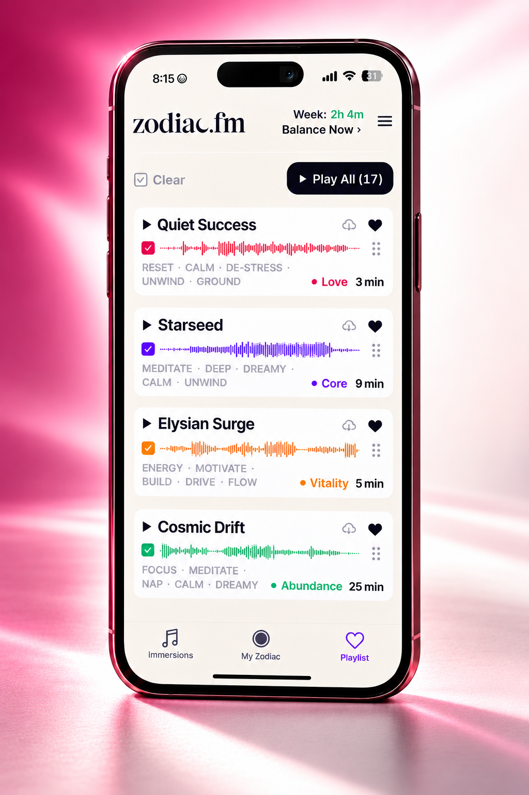
Join the over 10,000 people who are tuning in.
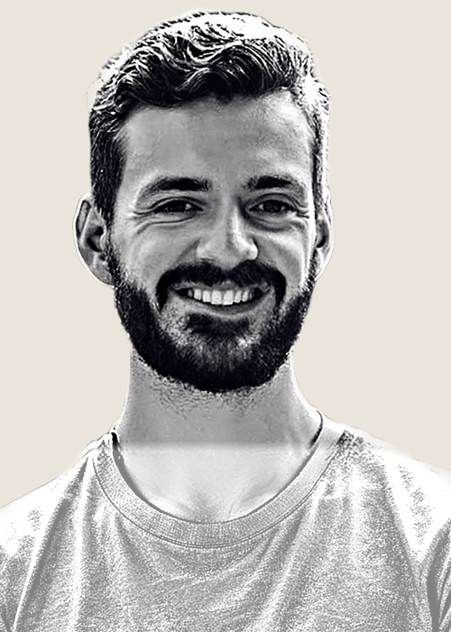
“It’s like a little cheat code for experiencing your authentic vibration… I use it every day.”
“I haven’t had anything quite so profoundly powerful and transformative as Zodiac.fm.”
“Without doing anything but listening, I become a different person.”
“My wife especially loves the man I am turning into since subscribing.”
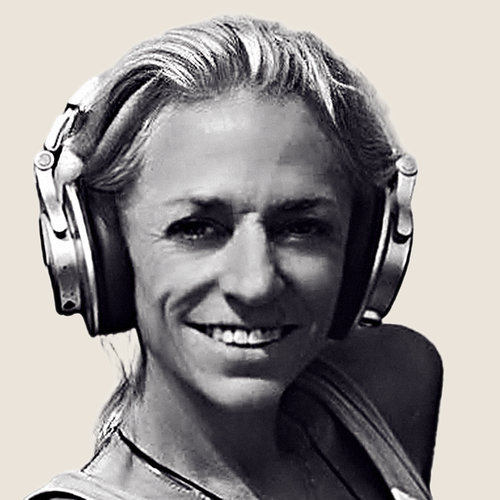
“The core immersions hit something within me that no other sound has been able to.”
Your long-form birth certificate or the hospital usually has it. Otherwise use your best estimate, and noon if you truly have no idea.
Listen for a week, then adjust if it does not land: you can change your birth details yourself twice a week in the app, and support can help sooner.
No. You don’t believe in gravity either, and it works fine.
Take the free week and let your life tell you.
Zodiac turns your birth pattern into four personal frequencies and carries them through music. The four give you stable references for identity, connection, vitality, and timing.
We begin with Nada Brahma, the old Indian teaching that the universe is sound and that in the beginning there was Om, the same root astrology grew from.
While studying the traditions that turn a birth chart into sound, we found a remote lineage within the Sri Vidya tradition that translates the exact moment of a birth into four frequencies, and we learned the method from them.
To find your four, we take the planetary positions at the minute you were born from an ephemeris (the astronomer’s table of where every planet sits at any moment) and calculate more than 248 data points from them.
Before offering it to anyone, we ran a year-long study with 300 people to make sure what we experienced held up for others too.
Nine minutes a day is the practice, spread across your four frequencies.
Missing a day is fine; there are no streaks. Most people listen far longer, because it is music they want on.
Most people don’t notice anything dramatic while they listen, because it works underneath the mind. It shows up in how you live: the decision that comes easier, the right people closer, your timing, and the people around you often see it first.
It compounds over months, which is why the study ran a year. Take the free week; if it isn’t for you, cancel and nothing is charged.
Yes. Zodiac can accompany meditation, breathwork, journaling or visualization. You can also listen while working or relaxing, through headphones or a decent speaker.
Give all four frequencies time. Core, Love and Vitality belong in the life you are creating too. The listening rhythm used in our study included at least 15 percent of listening time for each frequency.
Yes. Cancel anytime. Cancel your trial before day 8 to avoid the membership charge.
On the yearly plan, nothing is charged today. On day 8, $88 is billed yearly. On the monthly plan, nothing is charged today. On day 8, $14 is billed monthly.
Take your own frequencies into the life you are creating.
Your full library is waiting.
Choose my trial